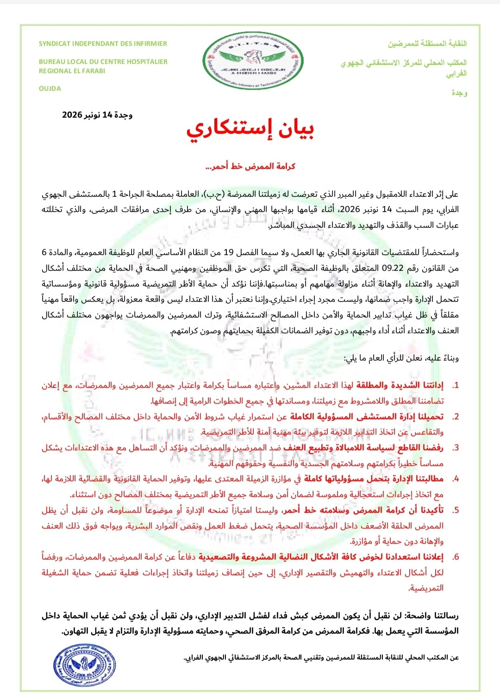

وجدة: «كرامة الممرض خط أحمر»… بيان استنكاري إثر الاعتداء على ممرضة بالمركز الاستشفائي الجهوي الفارابي

على إثر الاعتداء اللفظي والجسدي الذي تعرضت له الزميلة الممرضة (ح.ب) العاملة بمصلحة الجراحة 1 بالمركز الاستشفائي الجهوي الفارابي بوجدة، يوم السبت 14 نونبر 2026، أثناء قيامها بواجبها المهني من طرف إحدى مرافقات المرضى، أصدر المكتب المحلي للنقابة المستقلة للممرضين وتقنيي الصحة بيانا استنكاريا.
أدان المكتب المحلي بشدة هذا الاعتداء، معلنا تضامنه المطلق مع الزميلة، وحمّل إدارة المستشفى المسؤولية الكاملة عن استمرار غياب شروط الأمن والحماية داخل المصالح، مطالبا إياها بمؤازرة الزميلة المعتدى عليها وتوفير الحماية القانونية والقضائية اللازمة لها.
كما أعلن استعداده لخوض كافة الأشكال النضالية المشروعة دفاعا عن كرامة الممرضين والممرضات، مؤكدا أن كرامة الممرض وسلامته خط أحمر.
فتح في تطبيق النقابة